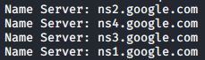
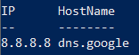
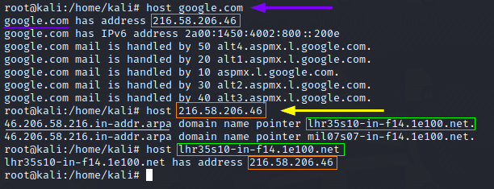
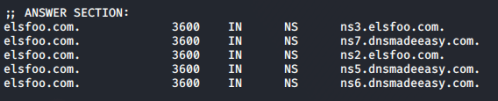

DNS Lookup
With the Whois lookup we have retrieved a list of DNS servers
associated with the target, now we want to query those servers to gain an inventory of potential target machines
associated with the given target domain(s).
To
examine(query) a DNS servers and potentially obtain records about the various hosts of which it is aware we can
use:
• nslookup (from command line for Windows)
• nslookup (from shell, it has some limitations on linux,
because of that is better dig)
• dig (from shell for linux)
•
http://network-tools.com/nslook/•
https://www.dnsqueries.com/en/•
https://mxtoolbox.com/SuperTool.aspx• (Forward)
DNS Lookup
DNS zone as common practice has:
◇ more A (name -> IP) records point usually to
the same IP
◇ each PTR (IP -> name) record usually points only to one name.
Query that asks to the
DNS to resolve a hostname to the corresponding IP.
A
record maps the domain name to an IP address
nslookup -type=A www.elsfoo.com #windows
nslookup -query=A www.elsfoo.com #linux
dig -t A www.elsfoo.com #linux
host www.elsfoo.com #linux
◇ Reverse DNS
Lookup PTR
record is the reverse version of an A record. the PTR record maps the IP address to a hostname.
PS> iex (New-Object Net.WebClient).DownloadString("https://raw.githubusercontent.com/PowerShellMafia/PowerSploit/master/Recon/Invoke-ReverseDnsLookup.ps1"); Invoke-ReverseDnsLookup -CIDR 192.178.124.83/24 #Windows

nslookup 198.178.124.83 #windows
nslookup -query=PTR 198.178.124.83 #linux
dig -t PTR -x 198.178.124.83 #linux
host 198.178.124.83 #linux

•
Name Server(NS) Lookup
Here we want to know the Name Server(s)
 now we want to get the IP
address of each of these NS Server(we have to do a DNS Lookup)
dig -t A ns3.elsfoo.com
dig -t A ns2.elsfoo.com
•
MX(Mail Exchange) Lookup
list of servers responsible for delivering e-mails for that domain
nslookup -type=MX example.com <IP_address_DNS_server> #windows
nslookup -query=MX example.com <IP_address_DNS_server> #linux
dig -t MX example.com @<IP_address_DNS_server> #linux
@ns3.elsfoo.com → set the server that we want to query (anyway this parameter is optional)
now we
want to get the IP address of each of these MX Server(we have to do a DNS Lookup)
dig -t A alt2.aspmx.l.google.com
dig -t A aspmx2.googlemail.com
Bibliography:
•
https://www.cloudflare.com/learning/dns/glossary/dns-root-server/•
https://www.cloudflare.com/learning/dns/dns-server-types/•
https://www.cloudflare.com/learning/dns/dns-server-types/